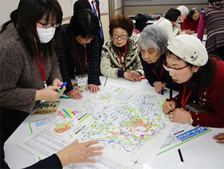
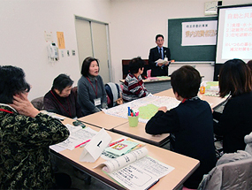
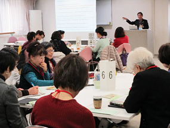
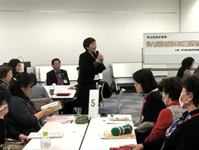

埼玉県消費者団体連絡会
県内4会場で、消費者団体によびかけて、災害発生時の地域での支え合いの必要性を学び、消費者被害を含め地域での見守りについて考える研修会を開催し、のべ35団体99人が参加しました。あわせて、各団体の日頃の取り組みを交流しました。
川越会場
- 日時：
- 1月18日（金）13時30分～16時 川越東上パールビルヂング第1ホール
- 参加団体：
- 8団体26人 松山婦人会、志木市くらしの会、コープみらい、狭山市消費者団体連絡会、埼玉消費者被害をなくす会、埼玉公団住宅自治会協議会、新日本婦人の会、埼玉消団連
寄居会場
- 日時：
- 1月23日（水）13時30分～16時 寄居中央公民館研修室
- 参加団体：
- 4団体12人 松山婦人会、コープみらい、埼玉県生協連、埼玉消団連
春日部会場
- 日時：
- 1月30日（水）13時30分～16時 コープみらい コーププラザ春日部3階会議室
- 参加団体：
- 14団体33人 三郷市くらしの会、杉戸町くらしの会、コープみらい、久喜市くらしの会、白岡市くらしの会、加須市くらしの会、春日部市くらしの会、越谷市消費生活研究会、吉川市くらしの会、埼玉消費者被害をなくす会、さいたま市消費者団体連絡会、埼玉県消費生活課、埼玉県生協連、埼玉消団連
鴻巣会場
- 日時：
- 2月5日（火）13時30分～16時 鴻巣市市民活動センター会議室B
- 参加団体：
- 9団体28人 行田市くらしの会、桶川市くらしの会、コープみらい、めぬまくらしの会、北本市婦人会、埼玉消費者被害をなくす会、さいたま市消費者団体連絡会、埼玉母親大会連絡会、埼玉消団連
【概要】
（一社）まちかど防災「減災塾」塾長 水島重光さんに「災害に備える 私たちのできる減災」と題して、自治体のハザードマップを活用しながら、災害に対する備えの必要性をわかりやすくお話しいただきました。 はじめに、これまでに発生した主な災害をふりかえり、今後30年間に震度6以上の揺れに見舞われる確率についてお話があり、私たちがいかに地震の危険にさらされているかを深く認識しました。そのうえで、各自の自助力チェックを行い、現在の減災レベルを自覚し、備えが不十分なことや具体的にどんなものをどれくらい備えておくべきかなど具体的に教えていただきました。
次に、少子高齢化社会における防災のあり方にも触れられ、人口減少や高齢化がさらに進む中で、ライフラインが集結している関東圏での被害を想定した備えの必要性、自助と共助の強化が必要であり、今からできる減災対策を考えましょうと呼びかけられました。
その後、それぞれが住む自治体のハザードマップを使いながら、自分の家や友達の家、近所の高齢者の家、赤ちゃんがいる家、避難場所や公衆電話、災害時に機能する自動販売機、ガソリンスタンド、病院などを確認しながら地図に印をつけたり、シールを貼ったりして、身近な資源の確認をおこないました。
最後に、ミニパンフレットに基づき企業が施設を開放する「災害時帰宅支援ステーション」や伝言ダイヤルなどの紹介があり、参加者からは、自分の住んでいる地域をもっと知ろう、身近な人や自団体の人と学んだことを共有したいなどの感想がありました。学習を通じて、災害への備え（もの・情報含め）を問われ、自分のくらし方を見直すきっかけになりました。また、周囲に住む人たちや街の資源などを認識すべきこと、日頃のつながりが大切であるとわかり地域での連携などそれぞれが考えました。
|  |
 |
| 川越会場でのワーク |
寄居会場 |
|  |
 |
| 春日部会場 |
鴻巣会場でのグループ交流報告 |
【感想 抜粋】
- まだまだ自助が足りていない←ということは、自分が自然を甘くみているのだと思い直しました。
- 災害について、どこか他人事のように感じていたのですが、その考えを改めさせられました。ちゃんと備えることはする。備蓄（食料・水・紙・ガソリンなど）する。
- 今までメディアなどで知ることで、深く考えることがなかったですが、知らないお話をお聞きして自分の無知さに改めて考えさせられました。多くのことを学び感謝です。日常生活をひとつひとつ考えて将来に備えたいと思います。
- 地図に印やシールをつけて確認することで、現実的に考えることができ、とても参考になりました。また、マークの意味も理解できて、住んでいる地域の様子がわかりました。
- 災害に備える方法も、行政の対応や企業の協力も日々変化しているのだなと感じました。常に学び、災害に備え続けることが大事なんだと思いました。
- 自分の住んでいる自治体では防災訓練を年2回しております。自治会館の敷地内には防災倉庫があり、備蓄品もありますが（住民の3割程度まかなえる）改めて自治会を通して今日学習したことを検討したいと思いました。
- 歩きで避難所をまわって、防災倉庫や市が備蓄しているものを実際確認してみたい。
- 買い物の仕方を考えます。
- 市役所で、水害や地震のマップをもらいたいと思った。家の近所だけでも、今日聞いた話を伝えたいです。
- 地域の消費者同士が力を合わせることでよくできるかもしれない課題について学んでみたい（高齢者や子どもの見守り、食品ロス削減、減災）
|